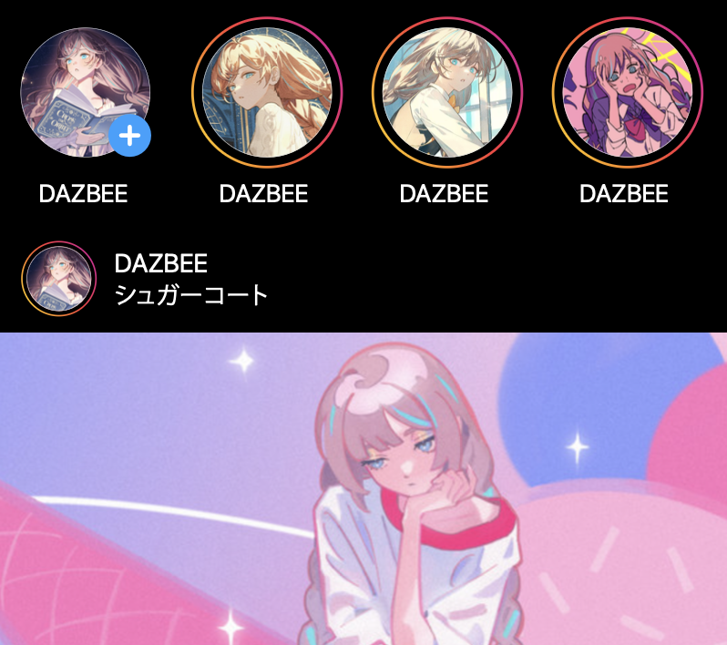
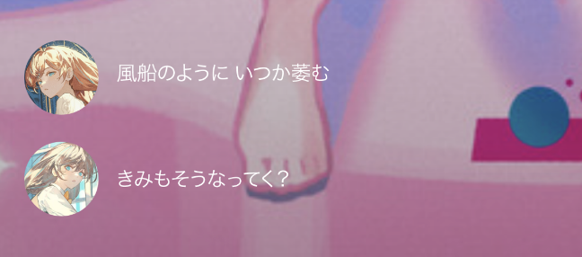

← back to projects
← back to projects
XUPDATE
Creative Producer
2026
DAZBEE - Sugarcoat [Fanmade]
Fanmade
Designer
2025
DAZBEE - Sugarcoat [Fanmade]
Fanmade
Designer
Video Editor
2025
 
about
After Effectsの技術習得を目的とし、ファンメイド動画を企画・デザイン・制作しました。
role
Designer
Video Editor